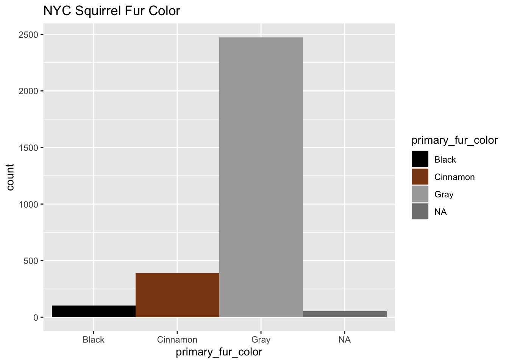

Data from NYC Squirrel Census. Retrieved from jonthegeek originally shared by Sara Stoudt. Pizza Data
library(tidyverse) nyc_squirrels <- readr::read_csv("https://raw.githubusercontent.com/rfordatascience/tidytuesday/main/data/2019/2019-10-29/nyc_squirrels.csv")## Rows: 3023 Columns: 36
## ── Column specification ────────────────────────────────────────────────────────
## Delimiter: ","
## chr (14): unique_squirrel_id, hectare, shift, age, primary_fur_color, highli...
## dbl (9): long, lat, date, hectare_squirrel_number, zip_codes, community_dis...
## lgl (13): running, chasing, climbing, eating, foraging, kuks, quaas, moans, ...
##
## ℹ Use `spec()` to retrieve the full column specification for this data.
## ℹ Specify the column types or set `show_col_types = FALSE` to quiet this message.ggplot(data=nyc_squirrels, aes(x=primary_fur_color, fill = primary_fur_color)) +
geom_bar(stat = "count", width = 1) +
scale_fill_manual(values = c("black", "chocolate4","darkgrey")) +
labs(title="NYC Squirrel Fur Color",
xlab = "Number of Observations",
ylab = "Fur Color")
pizza_datafiniti <- readr::read_csv("https://raw.githubusercontent.com/rfordatascience/tidytuesday/master/data/2019/2019-10-01/pizza_datafiniti.csv")## Rows: 10000 Columns: 10
## ── Column specification ────────────────────────────────────────────────────────
## Delimiter: ","
## chr (6): name, address, city, country, province, categories
## dbl (4): latitude, longitude, price_range_min, price_range_max
##
## ℹ Use `spec()` to retrieve the full column specification for this data.
## ℹ Specify the column types or set `show_col_types = FALSE` to quiet this message.pizza_nyc <- pizza_datafiniti %>%
filter(city == "New York")